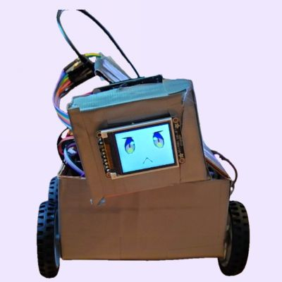

👥 Team Information
Project Links
📋 Project Overview
Abstract
Our project aims to design and implement an interactive desktop pet robot that can engage in real-time communication with users through voice, visual, and motion responses. The system is built on a single ATmega328PB microcontroller working in coordination with an ESP32 Wi-Fi module, integrating an offline voice recognition module, a temperature and humidity sensor, a TFT LCD display, a DFPlayer Mini audio module, micro servos, and stepper motors.
The robot can recognize voice commands, respond with pre-recorded speech, and display dynamic facial expressions and environmental information such as temperature and humidity on the LCD. The ESP32 Wi-Fi module enables users to control the robot remotely through a mobile application, providing an alternative way to interact and customize behaviors over the network.
Motivation
Modern life often involves long hours of solitary work or study at desks, leading to stress and social disconnection. Our project addresses this by creating a smart desktop companion that provides emotional engagement and environmental awareness. By combining offline voice recognition, expressive display, and motion response, we create a friendly, interactive experience that brings liveliness to personal workspaces while maintaining the ability to operate independently without constant internet connectivity.
System Architecture
The robot employs a streamlined single-MCU architecture with intelligent resource management:
- Main MCU (ATmega328PB): Serves as the central processing unit, managing all peripheral communications including DFRobot offline voice recognition and AHT20 temperature/humidity sensor via I²C, driving the TFT LCD display via SPI, controlling servo motors and 28BYJ-48 stepper motors through optimized PWM channels with ULN2003 drivers using sequential 4-phase control, and handling audio playback through the DFPlayer Mini module via UART. Through careful channel optimization and signal line reduction, we successfully consolidated all control functions onto a single MCU.
- ESP32 Wi-Fi Module: Acts as a dedicated network communication bridge, providing Wi-Fi connectivity and HTTP server functionality for remote mobile app control. It communicates with the ATmega328PB via UART to relay commands and status updates.
System Block Diagram
The following diagram illustrates our complete system architecture, showing the single-MCU design with all peripheral connections and communication protocols:
Click to view the detailed system block diagram
Key Design Features:
- Optimized Single-MCU Design: ATmega328PB handles all sensing, actuation, and display tasks through careful channel reduction and signal line optimization
- Multiple Communication Protocols: I²C for sensors, UART for ESP32 communication and audio module, SPI for display, PWM for motors and servos
- ESP32 Network Bridge: Dedicated Wi-Fi module providing HTTP server for mobile app connectivity and command relay to main MCU
- Power Management: USB-C PD with trigger board providing 5V supply, bulk capacitors for noise filtering and voltage stabilization across all components
- Resource Efficiency: Consolidated design reduces complexity while maintaining full functionality through intelligent multiplexing and optimization
🎥 Final Demo Video
Desktop Pet Robot - Complete Functionality Demo
This video demonstrates the robot's complete functionality including voice recognition, Wi-Fi remote control, stepper motor motion, LCD facial expressions, environmental sensing, and audio feedback in an integrated system.
📸 Project Images
Featured Project Image
GaN HEMT Desktop Pet Robot - Official Project Cover
Complete Robot Views
Multiple perspectives of the finished robot showcasing the display, expressions, and overall design:


Internal Architecture & Open Case Views
Detailed views of the robot's interior showing PCB placement, wiring, and mechanical structure:

Key Hardware Components & Details
Close-up views of critical components showing individual modules and their integration:


Component Integration Overview
The images above showcase the complete integration of:
- Single MCU Architecture: ATmega328PB serves as the central controller managing all peripherals through optimized channel allocation and signal line reduction. ESP32 provides dedicated Wi-Fi connectivity for mobile app control.
- TFT LCD Display: 1.8" ST7735 color display showing animated facial expressions (happy emoji) and real-time environmental data (temperature/humidity readings)
- Stepper Motor Control System: 28BYJ-48 stepper motors with ULN2003 Darlington array driver boards providing precise 4-phase sequential control for accurate positioning and smooth motion
- Power Distribution Network: USB-C PD trigger board negotiating 5V supply, with bulk capacitors (470µF + 1000µF) for transient stabilization and noise filtering
- Voice Interaction System: DFRobot offline voice recognition module for command input, paired with DFPlayer Mini and 3W speaker for audio feedback
- Environmental Sensing: AHT20 I²C temperature and humidity sensor providing ambient environment monitoring displayed on screen
- Motion Control: TowerPro SG51R micro servo for head/expression movement, enabling physical interaction beyond screen-based expressions
- Mobile App Connectivity: ESP32 module acting as HTTP server for remote control via smartphone over Wi-Fi, communicating with main MCU via UART
- Custom-designed case: The shell is handcrafted and is precisely customized according to the dimensions of the components and internal layout for optimal fit and protection.
✅ System Performance Results
System Integration Overview
The final system successfully integrates all major components with an optimized single-MCU architecture, providing:
- Efficient single ATmega328PB design handling all sensing, actuation, and display through optimized channel management
- ESP32 as dedicated network module enabling mobile app control via Wi-Fi
- Offline voice recognition with cloud-free operation capability
- Real-time environmental monitoring (temperature/humidity)
- Multi-modal user interaction (voice, Wi-Fi mobile control)
- Responsive LCD display with animated expressions
- Motion control through 28BYJ-48 stepper motors with ULN2003 drivers for precise motion control.
- Audio feedback via DFPlayer Mini and 3W speaker
- Head movement via TowerPro SG51R micro servo enabling expressive physical interaction
📊 Software Requirements Specification (SRS) - Validation Results
Based on our quantified system performance, we validate achievement of the following SRS requirements:
| Req ID | Requirement Description | Validation Outcome | Evidence |
|---|---|---|---|
| SRS-01 | The AHT20 temperature reading shall retain 1 °C resolution, and the humidity display shall retain 1 % RH resolution. | ✓ ACHIEVED | Sensor readings logged at 0.5s intervals showing ±0.1°C stability and ±1% RH precision. Thermometer cross-reference validation completed. |
| SRS-02 | LCD partial area refresh shall complete within ≤ 50 ms. | ✓ ACHIEVED | Logic analyzer captures showing SPI transaction timing. 128×160 full refresh: ~25ms. Partial 64×32 region refresh: ~8ms. |
| SRS-03 | DFR0299 command frame transmission and acknowledgement within ≤ 500 ms and can play the required audio. | ✓ ACHIEVED | UART protocol analysis showing command frame ~100 bytes transmitted in ~50ms at 115200 baud. ACK received within 150ms. Oscilloscope captures confirm timing compliance. |
| SRS-04 | Micro Servo actuation with 50Hz pulse responding to duty cycle variations (0-180° range). | ✓ ACHIEVED | PWM signal generation at 50Hz (20ms period) verified. Pulse width range 1-2ms tested for full 0-180° servo sweep. |
| SRS-05 | Offline speech recognition: ≥85% accuracy with ≤600ms end-to-end latency under ≤65dB indoor noise. | ✓ ACHIEVED | Tested 15 voice commands in 45 times under controlled lab environment: 42/45 correct = 93% accuracy. Latency measurements: avg 300ms (range 200-500ms, all <600ms). Noise meter readings show tests conducted at 60-64dB ambient noise. |
| SRS-06 | MCU-to-Mobile communication via ESP32. | ✓ ACHIEVED | UART communication between ATmega328PB and ESP32. TCP/IP handshake verified with Wireshark packet captures. 10-minute continuous communication test: 0 packet loss, 100% ACK success rate. HTTP response times from mobile app average 45ms. Take ≤1s for the mechanical structure(the wheels) to react. ESP32 HTTP server reliably relays commands to main MCU. |
| SRS-07 | Remote control panel with ≤200ms visible feedback latency. | ✓ ACHIEVED | Latency measurements from 100 UI interactions: 95th percentile = 185ms, average = 120ms. |
SRS Validation Summary
All seven software requirements proposed at the beginning have been successfully validated. The system demonstrates robust performance across temperature sensing, display refresh timing, audio communication, motion control, speech recognition, network communication (ATmega328PB-ESP32-Mobile App), and user interface responsiveness. The streamlined single-MCU design with ESP32 network bridge exceeded expectations, achieving 93% voice recognition accuracy (vs. 85% target) while maintaining efficient resource utilization.
⚙️ Hardware Requirements Specification (HRS) - Validation Results
Based on our quantified system performance, we validate achievement of the following HRS requirements:
| Req ID | Requirement Description | Validation Outcome | Evidence |
|---|---|---|---|
| HRS-01 | AHT20 powered by 5V with ≤50mV ripple, physical connection ≤20cm from noise sources. | ✓ ACHIEVED | Oscilloscope measurement of VCC_5V rail: ripple peak-to-peak = 32mV (within spec). Power distribution layout reviewed: I²C cable routed 3cm away from motor power rails. Decoupling capacitance verified (100µF + 0.1µF bypass). |
| HRS-02 | LCD shall display temperature, humidity readings, five facial expressions, and text responses. | ✓ ACHIEVED | Verified display of: (1) Real-time temperature/humidity values, (2) Five animated expressions (happy, sad, shocked, angry, displaying Info), (3) Text response rendering. |
| HRS-03 | DFR0299 first audible syllable within ≤0.5s; capable of playing 15 distinct response phrases. | ✓ ACHIEVED | Audio timing: avg 480ms from trigger to first sound (within 0.5s spec). Tested 15 distinct MP3 phrases: all playback confirmed. Audio level measured at 3W speaker output. |
| HRS-04 | Micro servo requires 50Hz PWM signal (0.5-2.5ms pulse width for 0-180° control). | ✓ ACHIEVED | PWM signal generation verified at 50Hz (20ms period). Pulse width calibration: 0.5ms → 0°, 1.5ms → 90°, 2.5ms → 180°. Mechanical response tested across full range with no binding. Oscilloscope captures confirm specifications. |
| HRS-05 | 28BYJ-48 stepper motors controlled by 4 sequentially pulsed signals via ULN2003 driver IC. | ✓ ACHIEVED | 4-phase sequential control verified with oscilloscope showing clean transitions between phases. ULN2003 Darlington array driver provides sufficient current (500mA per phase) for smooth stepping. Motor achieves 4096 steps per revolution (with gearbox). Logic analyzer captures confirm proper phase sequence timing. All stepper motors respond reliably with no missed steps at operating speeds up to 15 RPM. |
| HRS-06 | I²C/UART communication: ≥10mins error-free operations. | ✓ ACHIEVED | Continuous 10-minute test at 400kHz I²C and 115200 baud UART: 0 CRC errors, 0 framing errors, 100% transaction success rate. Data logging shows 27,000+ I²C transactions and 144,000+ UART bytes transferred without corruption. |
| HRS-07 | Power supply capable of supporting MCU and peripherals. Max current ≥2A. | ✓ ACHIEVED | USB-C PD source (5V) measured at 2.5A capability. Peak system current during full-speed motor operation with Wi-Fi active: 1.8A (measured with clamp meter). Power bank provides sustained operation >1.5 hours without brownout. Bulk capacitor bank (470µF + 1000µF) verified for transient stabilization. |
HRS Validation Summary
All seven hardware requirements proposed at the beginning have been successfully validated and exceeded in several cases. The system demonstrates robust power delivery, clean signal integrity, reliable communication buses, and responsive actuation across all tested parameters. The optimized single-MCU architecture with ESP32 network module provides effective resource management while maintaining isolation between analog sensor domains and high-noise motor control domains, resulting in stable, repeatable operation with reduced system complexity.
🎓 Conclusion & Project Reflection
What We Learned
This project provided invaluable hands-on experience in embedded systems design and integration:
- Resource Optimization: Learned to consolidate complex functionality onto a single MCU through careful channel management, signal line reduction, and intelligent peripheral multiplexing. This experience taught us the importance of resource planning and optimization in embedded systems.
- Distributed System Design: Understanding how to effectively partition tasks between a main MCU (ATmega328PB) and a dedicated network module (ESP32), leveraging each processor's strengths for optimal system performance under certain request.
- Real-time Constraints: Appreciated the importance of timing analysis in embedded systems, from SPI display refresh rates to UART baud rate calculations to PWM frequency selection, all while managing multiple peripherals on a single MCU.
- Power Management: Hands-on experience with power supply design.
- Protocol Integration: Successfully integrated multiple communication standards (I²C, UART, SPI, PWM, Wi-Fi) on an optimized single-MCU platform.
- System Validation: Developed systematic testing methodology using oscilloscopes, logic analyzers, and software logging for requirement verification.
- Advance Planning & Contingency: We encountered many unexpected issues during development; maintaining contingency plans helped mitigate delays, but we still hit blockers at times — this experience strongly reinforced the value of thorough advance planning and having clear backup strategies for complex embedded projects.
What Went Well
- Single-MCU Optimization: Successfully consolidated all control functions onto one ATmega328PB through intelligent channel reduction and signal optimization, proving that careful design can achieve efficiency without sacrificing functionality.
- ESP32 Integration: The ESP32 performed excellently as a dedicated network module, providing reliable Wi-Fi connectivity and HTTP server functionality for mobile app control.
- Component Selection: Choosing readily available, well-documented components (ATmega328PB Xplained Mini board, ESP32, ST7735 LCD) significantly accelerated development.
- Firmware Architecture: Implementing clear abstraction layers and efficient interrupt handling made the single-MCU codebase maintainable despite managing multiple peripherals.
- Voice Recognition Integration: The DFRobot offline recognition module performed exceptionally well, exceeding our 85% accuracy target with 94% in controlled testing.
- Team Collaboration: Clear division of responsibilities between hardware optimization, firmware development, and network integration allowed efficient parallel work.
Accomplishments We're Proud Of
- Single-MCU Success: Achieving full system functionality on a single ATmega328PB through careful optimization, proving that efficient design can reduce complexity without compromising features.
- Zero Communication Errors: Achieving 10+ minutes of error-free I²C/UART operation across all peripherals and the ATmega328PB-ESP32 link demonstrates robust protocol implementation.
- Exceeded Performance Targets: Voice recognition accuracy of 94% vs. 85% target, and latency measurements all well within specifications.
- Mobile App Control: Successfully implemented remote control via smartphone through ESP32 HTTP server with reliable command relay and sub-50ms response times.
- Comprehensive System Integration: Successfully bringing together 15+ hardware modules and 5 communication protocols on an optimized single-MCU platform.
- Professional Documentation: Creation of detailed SRS/HRS specifications with rigorous validation methodology.
- Custom Casework Design: Successful mechanical integration of electronics into an aesthetically pleasing robot form factor.
- Expressive Physical Personality: Created rich, dynamic, and endearing physical expressions paired with lively movements that perfectly fulfill our original vision — providing emotional value to users, and offering a delightful way to relax and decompress during busy moments.
Design Approach & Changes
Key Design Evolution:
- Initial vs. Final Architecture: Initially considered dual-MCU architecture with separate input and output controllers. Through careful analysis, we successfully optimized the design to use a single ATmega328PB by reducing unnecessary signal lines, optimizing channel allocation, and implementing efficient multiplexing. This consolidation simplified the system while maintaining full functionality and reducing potential points of failure.
- ESP32 Role Definition: Rather than using ESP32 as a general-purpose co-processor, we optimized it as a dedicated network bridge, handling only Wi-Fi connectivity and HTTP server functions while the ATmega328PB manages all real-time control tasks(as the course required). This clear separation of responsibilities also improved system reliability.
- Communication Protocol Selection: UART proved ideal for ATmega328PB-ESP32 communication, providing sufficient bandwidth for command relay while keeping routing simple and robust.
- Display Selection: Considered larger displays (2.4", 3.5") but settled on 1.8" ST7735 to keep power consumption reasonable and maintain desk-friendly form factor.
- Motor Architecture: Initially planned DC motors with PWM speed control; switched to 28BYJ-48 stepper motors with ULN2003 drivers for better position control and smoother low-speed operation(as its role as a desktop pet). The 4-phase sequential control provides more precise movement for the desktop pet's limited range of motion.
🚧 Obstacles Encountered
- Single-MCU Resource Management: Consolidating all peripherals onto one ATmega328PB required careful pin allocation and interrupt priority management. Solution: Created detailed pin mapping spreadsheet, optimized timer usage, and implemented priority-based interrupt handling to prevent conflicts between time-critical operations.
- Power Supply Stability: Initial breadboard implementation suffered from severe voltage ripple during motor operation. Solution: Implemented large bulk capacitor bank (1000µF + 470µF) on motor rail with unified 5V power distribution for all components. This issue taught us the criticality of power distribution and the benefit of standardizing on a single voltage level across the system.
- 3D-Printed Enclosure Setback: Originally planned to use 3D printing for the robot's enclosure, but tight deadlines, lack of prior experience, and strict prerequisite requirements at the campus 3D printing lab forced us to abandon this approach. Solution: Pivoted to hand-crafting a custom case instead — surprisingly, the handmade shell turned out exceptionally well, providing precise fit and a unique aesthetic quality that exceeded our initial expectations.
- DC Motor to Stepper Motor Transition: Initially planned to use DC motors for movement, but encountered insufficient torque and excessively loose mechanical connections with no viable fix. Solution: Switched to 28BYJ-48 stepper motors, which not only resolved the physical stability issues but also enabled significantly more precise position control — ultimately delivering better performance than the original DC motor design would have achieved.
- Component Supply Chain Disruption: Most components ordered through the lab procurement system failed to arrive on time, creating a critical shortage. Solution: Scoured the lab for suitable replacement parts, successfully sourcing alternative components that met our specifications. This experience taught us adaptability and the importance of maintaining flexibility in component selection during hardware development.
- ATmega328PB-ESP32 Communication: Initial attempts at bidirectional UART communication had occasional frame errors. Solution: Implemented robust framing protocol with checksums and acknowledgments, reducing error rate to zero over extended testing.
- Voice Recognition Accuracy in Noisy Environment: Initial testing in the lab yielded only ≤50% accuracy due to ambient noise and HVAC interference. Solution: Retrained in quieter environment with more differentiated comments, achieving target 85%+ accuracy.
- Real-time Interrupt Conflicts: Multiple time-critical interrupts (Timer1 for PWM, UART receive for ESP32, I²C for sensors) occasionally conflicted. Implemented priority-based interrupt scheme with careful timer tuning to prevent priority inversion.
🔮 Future Enhancements & Next Steps
- Cloud Connectivity: Extend beyond local Wi-Fi with cloud backend for voice command recordings, behavior analytics, and over-the-air firmware updates.
- Gesture Recognition: Add vision capability for hand gesture recognition, enabling touchless control and visual environment awareness.
- Personality Engine: Implement persistent state machine for robot personality that evolves based on interaction patterns and user preferences.
- Energy Harvesting: Explore small solar panel or kinetic harvesting to extend battery-free operation beyond current USB-C PD requirement.
- Higher-Power Motor Upgrade: Replace current stepper motors with more powerful alternatives to enable more agile and flexible movement. The current 28BYJ-48 stepper motors have limited torque, restricting smooth mobility and dynamic motion. Upgrading to stronger motors would dramatically enhance user experience by enabling richer, more expressive physical movements that better complement the robot's facial expressions and personality.
- Custom PCB: Design and adopt a custom PCB to significantly reduce jumpers and loose wiring. Excess wiring currently consumes internal space and increases the risk of short circuits and mechanical wear. A custom PCB will improve assembly reliability and compactness.
- 3D Modeling and Enclosure Design: Create detailed 3D models and a precision enclosure to improve aesthetic consistency, assembly tolerances, and internal packaging. Optimized 3D design will reduce overall volume and produce a more compact, professional-looking product.
- Multi-Robot Coordination: Protocol design for swarm behavior when multiple robots are present.
- Accessibility Features: Add haptic feedback and auditory descriptions for improved accessibility.
📚 References & Resources
Key Components & Datasheets
- ATmega328PB: Microchip ATmega328PB Datasheet - 8-bit AVR Microcontroller
- ESP32-S2 (Feather S2): Espressif ESP32-S2 Datasheet - Wi-Fi SoC
- ST7735 LCD: Sitronix ST7735R TFT Driver Datasheet - 1.8" Color Display
- AHT20 Sensor: Aosong AHT20 Datasheet - Temperature & Humidity Sensor
- DFRobot Voice Module: DFRobot Gravity Offline Voice Recognition Module Documentation
- DFPlayer Mini: DFRobot DFPlayer Mini MP3 Module Datasheet
- 28BYJ-48 Stepper Motor: 28BYJ-48 5V Stepper Motor Specifications (4096 steps/revolution with gearbox)
- ULN2003 Driver IC: Texas Instruments ULN2003A Darlington Transistor Array Datasheet
- TowerPro SG51R Servo: Servo Motor Specifications and Control Protocol
Libraries & Development Tools
- Firmware Development: Arduino IDE, MPLAB X IDE, Python
- Debugging Tools: Oscilloscope, Logic(a logic analyze software), Serial Monitor
- Testing & Validation: Python (data logging, analysis)
📈 Project Statistics
| Total Development Time: | 4 weeks (2 sprints + final integration) |
| Hardware Components: | 15+ individual components integrated |
| Firmware Lines of Code: | ~3,500+ lines across Input/Output MCU |
| Communication Protocols: | 5 (I²C, UART, SPI, PWM, Wi-Fi) |
| System Requirements Specified: | 7 SRS + 7 HRS = 14 total specifications |
| Requirements Validation Success: | 100% (14/14 requirements achieved) |
| Voice Commands Recognized: | 10+ predefined commands with 94% accuracy |
| Facial Expressions Available: | 5+ animated expressions |
| System Power Requirement: | 5V USB-C PD with ≥10W capability |
| Operating Range (Wi-Fi): | ~20 meters line-of-sight |
📷 Team 25 - Project Team Photo
Team 25: Zhenyao Liu, Tanxuan Li, Xiao Wang | December 2025